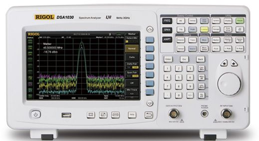

频谱分析仪

产品简介
□产品型号：DSA1000
□产品名称：频谱分析仪
□DSA1000系列为体积小，重量轻，高性价比的便携式频谱分析仪
功能特性
□采用全数字中频技术
□频率范围9 kHz至2 GHz或3 GHz
□显示平均噪声电平（DANL）-120dBm（DSA1020),-138 dBm(DSA1030)
□相位噪声典型值-80 dBc/Hz（偏移10kHz）
□全幅度精度<1.5 dB
□最小分辨率带宽（RBW）100 Hz
□前置放大器 （DSA1030可选）
□3 GHz跟踪源（DSA1030可选）
□内置锂电池，持续工作时间3小时（可选）
□具有丰富的测量功能和多种自动设置功能 （DSA1030可选）
□8.5英寸宽屏显示，界面简洁富有亲和力，操作人性化设计
□多样的连接能力：LAN\USB Host\USB Device\VGA\GPIB（可选），升级方便、易于集成
□设计紧凑，重量仅为6.2 kg（不带电池）
应用行业
□ 设计和调试；
□ 教育和培训；
□ 制造测试和质量控制；
□ 服务和维修